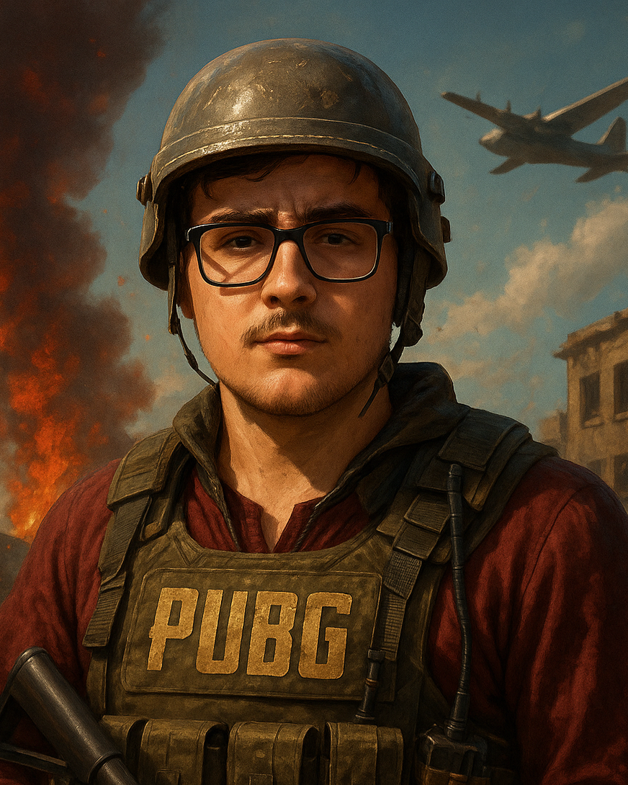

Bonjour, je m'appelle Ervan Lemqadem, j'ai 16 ans, bientôt 17, et je suis en première année à l'École Technique des Métiers de Lausanne. Ce site web sur lequel vous vous trouvez actuellement a été créé dans le cadre du projet informatique 293 WEB STATIC, donné par notre enseignant, Monsieur Mveng. J'ai décidé de consacrer mon site web au jeu vidéo PUBG, car c'est un jeu auquel j'ai beaucoup joué et auquel je porte une affection particulière.
Ce site est donc un site non officiel, et les images que vous y trouverez sont principalement tirées du site officiel de PUBG.
En dehors de cela, dans la vie, je suis de ceux qui aiment les activités salvatrices. Que ce soit à travers le sport, la lecture, ou simplement en passant du temps avec mes amis, je trouve toujours un moyen de me ressourcer et de me détendre. J'apprécie particulièrement les défis, qu'ils soient intellectuels ou physiques, car ils me permettent de me dépasser et d'apprendre constamment.
J'espère que vous apprécierez votre visite sur mon site et que vous y trouverez des informations intéressantes sur PUBG.
N'hésitez pas à me contacter si vous avez des questions ou des suggestions via le formulaire de contact !
À PROPOS DE L'AUTEUR
Ervan Lemqadem
